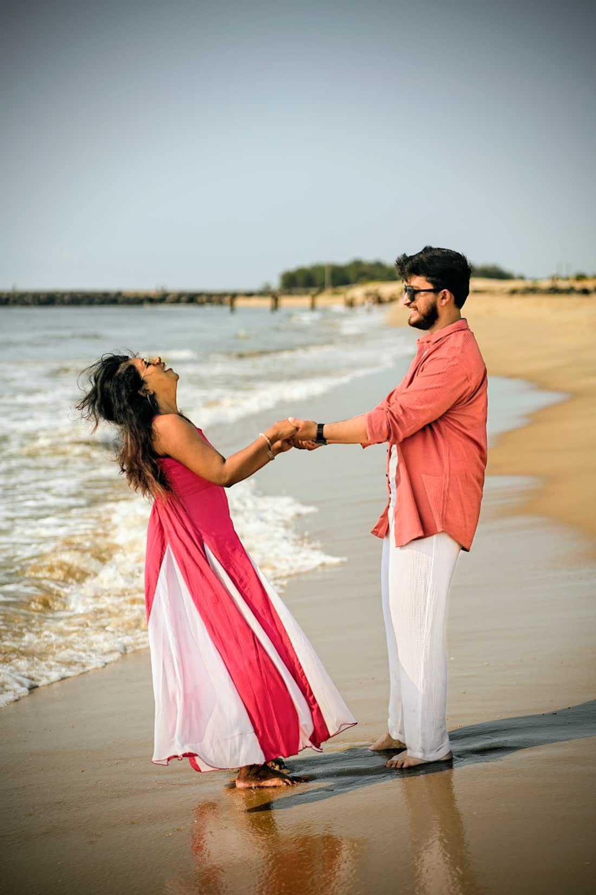
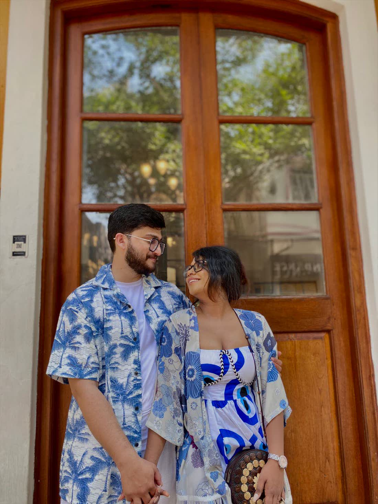

Mehendi · Sangeet · Haldiমেহেন্দি · সঙ্গীত · গায়ে হলুদ
Basak Bariবসাক বাড়ি
Debendranagar, Kolkataদেবেন্দ্রনগর, কলকাতা
The bride’s home, where the first three celebrations happen.কনের বাড়ি, যেখানে প্রথম তিনটি অনুষ্ঠান হবে।
Open in Mapsম্যাপে দেখুনShri Shri Ganeshaya Namah শ্রী শ্রী গণেশায় নমঃ
Together with our familiesপরিবারের সকলকে সঙ্গে নিয়ে
Tap #SuRo to openখুলতে #SuRo-তে ট্যাপ করুন
You are invited to the marriage of
Susmita Basak & Rohit Mukherjee
আপনাকে আমন্ত্রণ জানাই
সুস্মিতা বসাক ও রোহিত মুখার্জীর শুভ বিবাহে
4 & 5 December 2026 · Kolkata৪ ও ৫ ডিসেম্বর ২০২৬ · কলকাতা
Together with our familiesপরিবারের সকলকে সঙ্গে নিয়ে
Susmita Basak · Rohit Mukherjeeসুস্মিতা বসাক · রোহিত মুখার্জী
4 & 5 December 2026 · Kolkata৪ ও ৫ ডিসেম্বর ২০২৬ · কলকাতা

Shri Ganeshaya Namahaশ্রী গণেশায় নমঃ
With hearts full of joy, the Mukherjee and Basak families invite you to two days of celebration in Kolkata, as our children are married and two families become one. অত্যন্ত আনন্দের সঙ্গে মুখার্জী ও বসাক পরিবার আপনাকে আমন্ত্রণ জানাচ্ছে কলকাতায় দুই দিনের উৎসবে, যেখানে আমাদের সন্তানদের বিবাহ সম্পন্ন হবে এবং দুই পরিবার এক হয়ে যাবে।
Our storyআমাদের গল্প
Susmita sent Rohit a message one ordinary working day. Two words: “Hi bro”. Neither of us thought anything of it at the time.
Somewhere between shared deadlines and long conversations that had nothing at all to do with work, bro stopped being an accurate description.
She is still at the company where we met. He has since moved to a new one. Neither of us has moved on from the other.
And on 5 December 2026, in Kolkata, we are getting married.
সাধারণ একটা কাজের দিনে সুস্মিতা রোহিতকে একটা মেসেজ পাঠিয়েছিল। মাত্র দুটো শব্দ: “Hi bro”। তখন কেউই সেটাকে বিশেষ পাত্তা দেয়নি।
তারপর কাজের ডেডলাইন আর কাজের সঙ্গে কোনও সম্পর্ক নেই এমন অজস্র কথার মাঝে কোথাও গিয়ে ওই bro ডাকটা আর মানানসই রইল না।
সুস্মিতা আজও সেই একই কোম্পানিতে। রোহিত নতুন কোম্পানিতে চলে গেছে। কিন্তু একে অপরকে ছেড়ে কেউই কোথাও যায়নি।
আর ২০২৬-এর ৫ই ডিসেম্বর, কলকাতায়, আমরা বিয়ে করছি।
Somewhere along the wayপথ চলতে চলতে
Save the datesতারিখ মনে রাখুন
Friday & Saturdayশুক্রবার ও শনিবার
The wedding ceremony begins at 6:00 PM on the 5th. শুভ বিবাহ ৫ তারিখ সন্ধ্যা ৬টা থেকে।
Where to comeকোথায় আসবেন
Mehendi · Sangeet · Haldiমেহেন্দি · সঙ্গীত · গায়ে হলুদ
Debendranagar, Kolkataদেবেন্দ্রনগর, কলকাতা
The bride’s home, where the first three celebrations happen.কনের বাড়ি, যেখানে প্রথম তিনটি অনুষ্ঠান হবে।
Open in Mapsম্যাপে দেখুনThe wedding ceremonyশুভ বিবাহ
Kestopur, Kolkataকেষ্টপুর, কলকাতা
About ten minutes from Basak Bari by car. Dinner follows the ceremony.বসাক বাড়ি থেকে গাড়িতে প্রায় দশ মিনিট। অনুষ্ঠানের পরে নৈশভোজ।
Open in Mapsম্যাপে দেখুনDecember evenings in Kolkata turn cool. Carry something warm for the wedding night. ডিসেম্বরে কলকাতার সন্ধ্যা ঠান্ডা। বিয়ের রাতের জন্য গরম কিছু সঙ্গে রাখবেন।

The celebrationsঅনুষ্ঠানসূচী
Friday · 4 December 2026শুক্রবার · ৪ ডিসেম্বর ২০২৬
9:00 AM onwardsসকাল ৯টা থেকে
Basak Bari, Debendranagarবসাক বাড়ি, দেবেন্দ্রনগর
Henna, breakfast, and far too many photographs.মেহেন্দি, জলখাবার আর অগুনতি ছবি।
5:00 PM onwardsবিকেল ৫টা থেকে
Basak Bari, Debendranagarবসাক বাড়ি, দেবেন্দ্রনগর
Music, dancing, and everybody’s rehearsed performance.গান, নাচ, আর সকলের তৈরি করা পারফরম্যান্স।
Saturday · 5 December 2026শনিবার · ৫ ডিসেম্বর ২০২৬
9:00 AM onwardsসকাল ৯টা থেকে
Basak Bari, Debendranagarবসাক বাড়ি, দেবেন্দ্রনগর
Turmeric, laughter, and clothes you will never get clean again.হলুদ, হাসি, আর এমন পোশাক যা আর কোনওদিন পরিষ্কার হবে না।
6:00 PM onwardsসন্ধ্যা ৬টা থেকে
Sree Krishna Banquet Hall, Kestopurশ্রীকৃষ্ণ ব্যাঙ্কোয়েট হল, কেষ্টপুর
The reason for all of the above. Dinner follows.উপরের সব কিছুর আসল কারণ। এরপর নৈশভোজ।
And now, to the two of usআর এখন, আমাদের দুজনের কথা
Usআমরা
Your presence and your blessings would mean everything to us. We cannot wait to see you there. আপনার উপস্থিতি ও আশীর্বাদ আমাদের কাছে সবচেয়ে বড় প্রাপ্তি। আপনার সঙ্গে দেখা হওয়ার অপেক্ষায় রইলাম।
#SuRo
With love · The Basak & Mukherjee Families ভালোবাসা সহ · বসাক ও মুখার্জী পরিবার